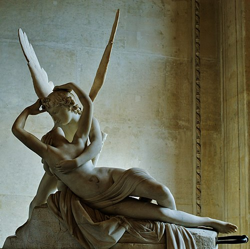

Psyche Revived by Cupid's Kiss
Antonio Canova
Cupid bends over Psyche, who has fallen into a death-like sleep. Her arms reach up to draw him in. The composition forms a perfect X — walk around it and the two bodies rotate through a dance.